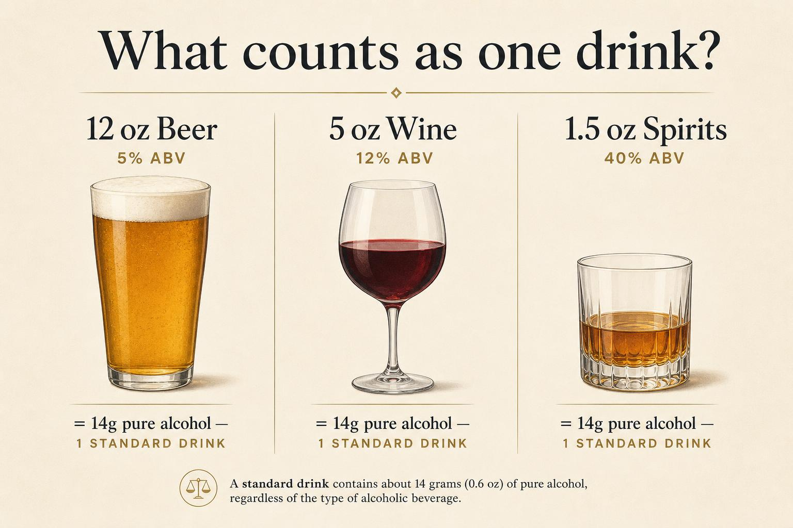
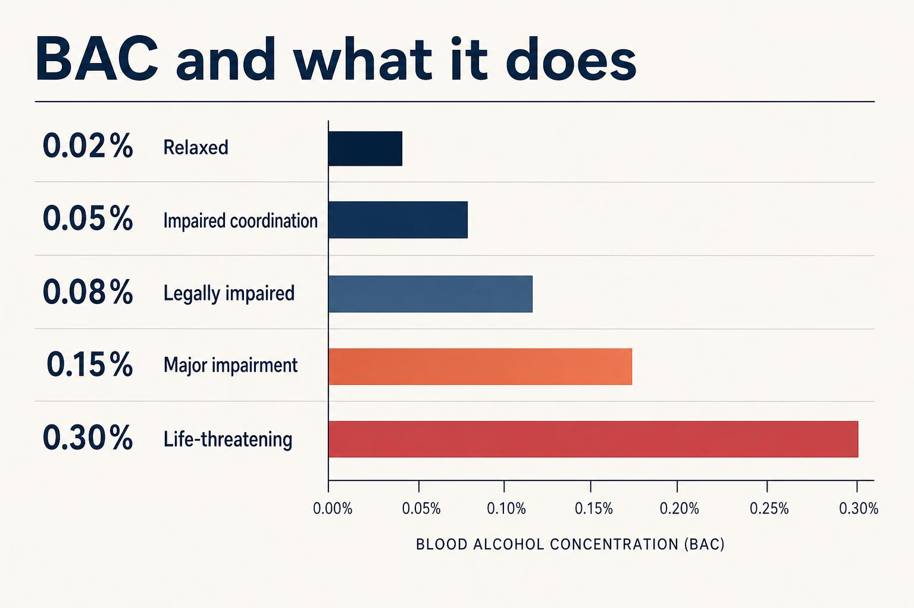
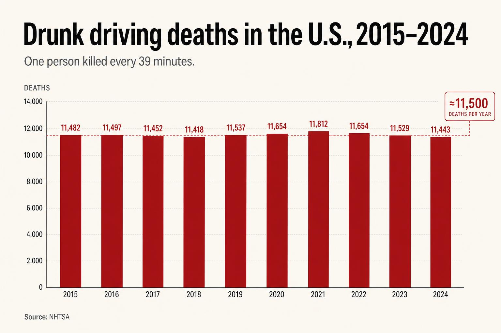

Learn
The truth about alcohol.
Section 01
What counts as binge drinking?
The NIAAA defines binge drinking as a pattern that brings BAC to 0.08% or higher — typically 5+ drinks for men or 4+ for women within about 2 hours. It's the most common pattern of excessive drinking in the U.S., and most people who binge drink are not alcohol dependent.

- ·1 in 6 U.S. adults binge drinks, about 4 times a month on average.
- ·Binge drinking is linked to injuries, alcohol poisoning, violence, and unintended pregnancies.
- ·Repeated binges damage the heart, liver, brain, and immune system over time.
Section 02
When drinking becomes alcohol use disorder
Alcohol Use Disorder (AUD) is a medical condition defined by the inability to stop or control drinking despite harm. It exists on a spectrum from mild to severe.
- ·Drinking more, or longer, than intended.
- ·Strong cravings or urges to drink.
- ·Continuing to drink even when it causes relationship, work, or health problems.
- ·Needing more alcohol to feel the same effect (tolerance).
- ·Withdrawal symptoms - shakiness, sweating, anxiety, etc. (when not drinking).
Section 03
How your body processes alcohol
Alcohol enters your bloodstream within minutes. Your liver metabolizes roughly one standard drink per hour. Coffee, cold showers, and food after the fact don't speed it up.

- ·0.02% — Light relaxation, slight warmth.
- ·0.05% — Reduced coordination, lowered alertness.
- ·0.08% — Legally impaired in most U.S. states. Reaction time clearly slowed.
- ·0.15% — Major loss of balance, vomiting likely.
- ·0.30%+ — Risk of unconsciousness, alcohol poisoning, and even death.
Section 04
Drinking more safely
If you choose to drink, these habits dramatically lower your risk of harm.

- ·Eat before and while you drink. Food slows absorption.
- ·Alternate every alcoholic drink with a full glass of water.
- ·Set a number before you start. Stop there.
- ·Never mix alcohol with opioids, benzodiazepines, or stimulants.
- ·Don't drive. Plan your ride home before the first drink.
- ·Stay with people you trust. Look out for each other.
Section 05
When to ask for help
If drinking is starting to feel like something you can't control, you're not alone. Reaching out is the strongest move you can make.
- ·SAMHSA National Helpline: 1-800-662-4357 (free, confidential, 24/7).
- ·988 Suicide & Crisis Lifeline — call or text 988.
- ·Talk to a primary care doctor — AUD is treatable.
- ·Mutual support: AA, SMART Recovery, LifeRing.